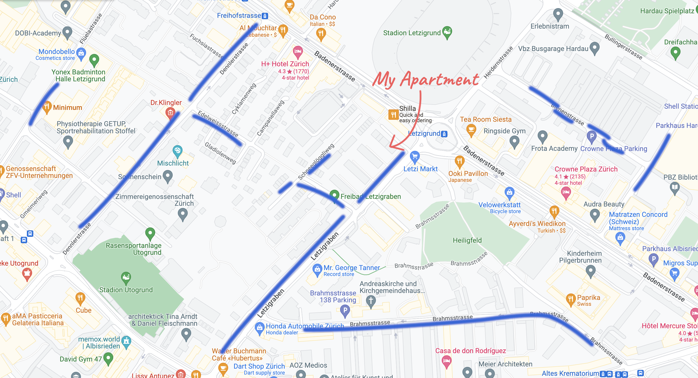

Firstly, please don't make the mistake of parking in the carpark directly beside the house. Those spaces are private, and your car may be taken away
Along the street you'll see parking spaces with a blue line around them - these "blue zone" spaces are the best solution for parking nearby
Overnight (7pm-8am) and on Sundays you can park in the blue zone for free. At all other times you need a permit that costs 15 francs per day and you can only buy it online here. After you buy the permit, you print it out and display it in your car
Below, you can see the blue zones near the apartment, marked with blue lines. It can be very busy, but normally it's possible to find something
